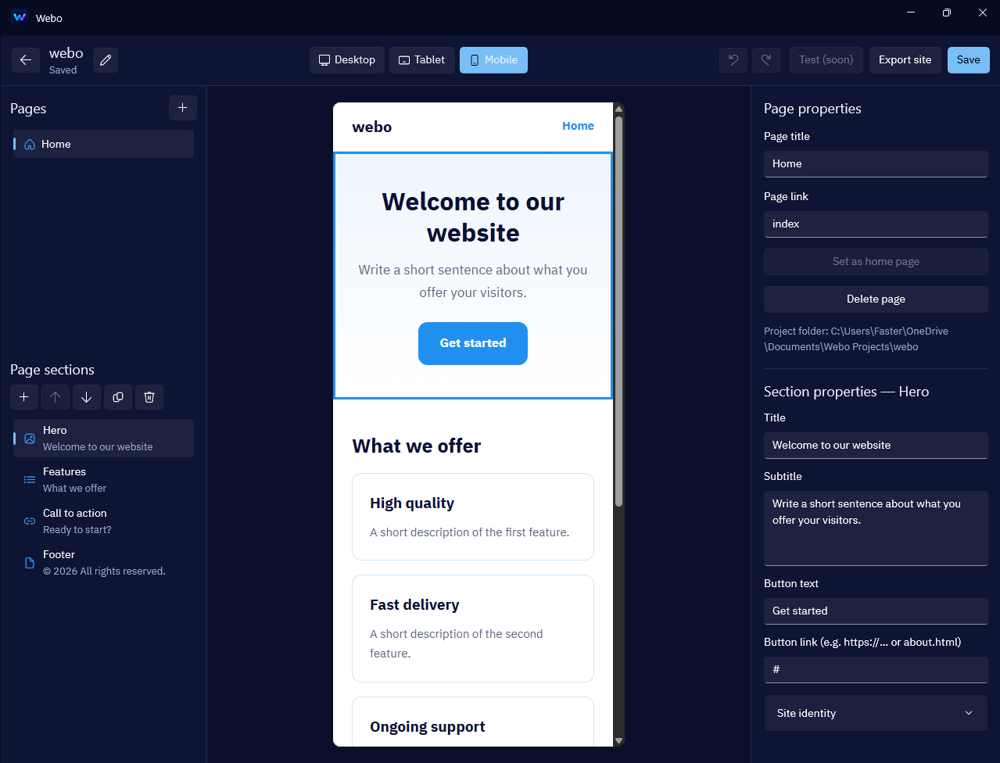

موقع متعدد الصفحات
أنشئ صفحات مشروعك، غيّر أسماءها وروابطها، وحدد الصفحة الرئيسية من مكان واحد.
حوّل أفكارك إلى مواقع متعددة الصفحات، صمّمها بعينك وشوف نتيجتها لحظة بلحظة — من غير ما تكتب سطر كود.

أدوات واضحة تساعدك تبني هيكل موقعك، ترتّب محتواه، وتجهّزه للتصدير — من غير تعقيد أدوات البرمجة.
أنشئ صفحات مشروعك، غيّر أسماءها وروابطها، وحدد الصفحة الرئيسية من مكان واحد.
تابع شكل الصفحة أثناء العمل، وبدّل بين أحجام سطح المكتب والتابلت والموبايل.
اختَر لوحة ألوان وخطًا وشكلًا للحواف، أو خصّص اللون بما يناسب علامتك.
رتّب أقسام الصفحة مثل Hero والمميزات والخطوات والأسئلة الشائعة والتواصل.
صدّر صفحات موقعك وملفات التنسيق والخط، واحتفظ بنسخة من موقعك تقدر تنقلها وتستضيفها.
الوظائف الأساسية تعمل محليًا. ملفات مشاريعك في المكان اللي تختاره، من غير حساب أو تتبّع.
Local-firstWebo يرتّب عملية البناء في خطوات مفهومة، عشان تركّز على المحتوى والشكل بدل تفاصيل الكود.
اختَر اسم المشروع ونوع الموقع ولغته ومكان حفظه.
أضف الصفحات والأقسام، وعدّل محتواها وهويتها مع متابعة المعاينة.
احصل على ملفات HTML وCSS، ثم ارفعها على خدمة الاستضافة التي تختارها.
إدارة الصفحات والأقسام على اليسار، معاينة موقعك في المنتصف، وخصائص العنصر المحدد على اليمين. كل أدواتك قدامك.
الأساسيات جاهزة، وبعض ميزات المحرر والتصدير الجديدة ما زالت قيد الاختبار على أجهزة Windows. نطوّر Webo خطوة بخطوة، وشفافين بشأن ما هو متاح وما هو قادم.
كل التفاصيل المهمة عن Webo في مكان واحد.
Webo متاح مجانًا بالكامل خلال فترة الإطلاق الحالية. هذه الفترة محدودة، وقد تتغير سياسة الإتاحة مستقبلًا.
لا حاليًا. Webo مخصص لأجهزة Windows 10 وWindows 11 بمعمارية x64.
لا. فكرة Webo إنك تبني صفحات موقعك بصريًا من خلال المحرر. ويتيح لك تصدير ملفات HTML وCSS لموقعك.
يمكنك تصدير ملفات HTML وCSS ثم رفعها إلى خدمة الاستضافة التي تختارها. معالج النشر المباشر من داخل Webo ليس متاحًا بعد.
الوظائف الأساسية تعمل محليًا ولا تحتاج إلى اتصال بالإنترنت. المعاينة تحتاج إلى WebView2 Runtime، وهو متوفر عادةً على أجهزة Windows الحديثة.
ابدأ بناء موقعك مع Webo. متاح الآن لأجهزة Windows 10 و11 — إصدار x64.
Download for Windowsسيتم توجيهك إلى مصدر التحميل الرسمي. تأكد من اختيار إصدار Windows x64.